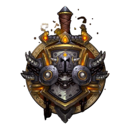
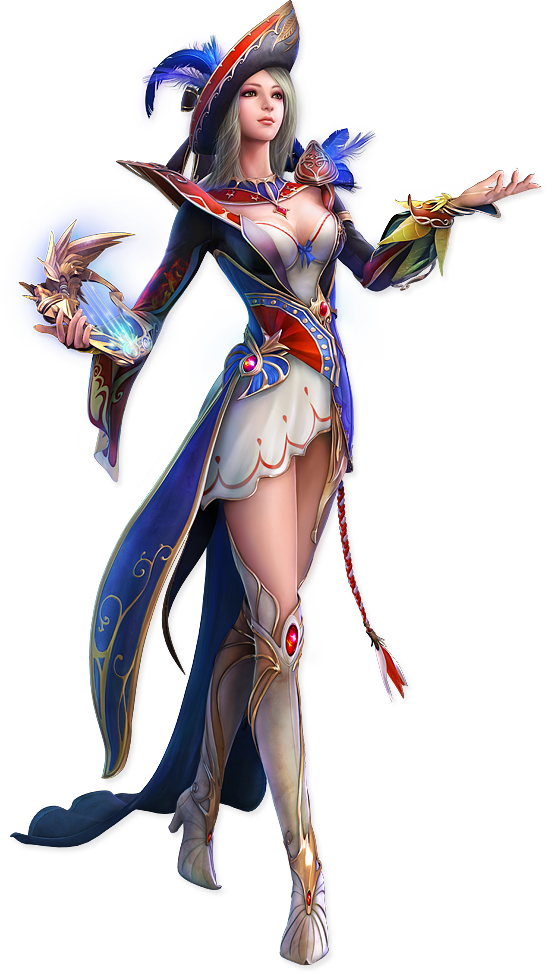

-
Bruxo
Especializações
Destruição: Dano a distância
Demonologia: Dano a distância
Suplício: Dano a distânciaDescrição
Essa é a classe responsável por reunir todos do grupo para enfrentar algum mal antigo e terrível. Falando assim parece até importante, né? Mas a real é que a galera gosta de ter um bruxo para usar o Ritual de Evocação, e puxar os atrasildos para a atividade. Brincadeiras a parte, Bruxo é outra classe que faz uso de Ajudantes, sendo que no caso deles, evocações demoníacas. Esses ajudantes tem algumas funções que ajudam melhor em determinadas situações. A classe também possui a Pedra da Alma, que é sempre de uma ajuda incrível durante a batalha quando alguém do grupo morre.
-
Paladino
Especializações
Sagrado: Cura
Proteção: Tanque
Retribuição: Dano corpo a corpo
Descrição
Uma das classes híbridas que podem navegar entre os 3 tipos de especializações, permitindo você ter uma experiência maior do jogo. Fazem uso de várias Bênçãos para se proteger e proteger aliados de danos. Possui Impor das Mãos e Escudo Divino, que são duas habilidades bem marcadas que sempre salvam vidas. Além disso tudo, é uma classe de brilhos!
-
Guerreiro 
Especializações
Armas: Dano corpo a corpo Fúria: Dano corpo a corpo Proteção: TanqueDescrição
Essa é a classe para o povo casca grossa e raiz, uma das classes com mais habilidades para ser gerenciadas. Algumas das habilidades mais marcantes dessa classe são a Investida e Salto Heroico. O recurso utilizado pelos guerreiros é a Raiva, que é gerada e gasta de acordo com os seus ataques. Uma das grandes vantagens de jogar com essa classe é a sua habilidade de equipar qualquer arma do jogo, exceto Varinhas. Isso é um grande adianto quando você resolver farmar transmogs de armas.
-
Mago

Especializações
Arcano: Dano a distância Fogo: Dano a distância
Gélido: Dano a distância
Descrição
Mago é aquele tipo de classe cheia das artimanhas, sabe? Na especialização Gélido você pode conjurar um ajudante para ficar ao seu lado nas lutas. Tem algumas habilidades bem divertidas, sendo uma das marcas deles a Polimorfia, que possui diversas variantes na qual você pode transformar seu oponente e que podem ser aprendidas. Também conhecido como criadores de Portais, o que facilita horrores a sua movimentação pelo mundo, tem também a capacidade de Conjurador de Refeições, além de que na hora da batalha, podem dar uma força no grupo com a sua Distorção Temporal. Jogar de mago é uma opção bem divertida.
-
Sacerdote

Especializações
Sagrado: Cura
Disciplina: Cura
Sombras: Dano a distânciaDescrição
A vida de Sacerdotes é bem cheia durante uma batalha, com fortes habilidades de curas, a classe também se sai muito bem no quesito dano. Assim como o mago, possui a habilidade de Levitar, que salva vidas de pessoas desatentas com altura. Possui a capacidade de Controle Mental, que pode ser um recurso bacana em algumas lutas. Alguns Sacerdotes também são conhecidos por sua carência e constante uso do Salto de Fé, para terem seus companheiros de aventuras juntinho de si e não sobre aquele fogo feioso.
-
Arqueiro

Especializações
Domínio das Feras: Dano a distância
Precisão: Dano a distância
Sobrevivência: Dano corpo a corpoDescrição
Classe dedicada a quem gosta de aventuras em boa companhia, pois apesar de ser uma das classes com ajudantes, ela é a única com a opção de Domar feras e ter novos tipos de ajudantes. Você pode escolher vários tipos de ajudantes ao longo do jogo. Possui duas habilidades ímpares que sempre ajuda a fugir de problemas, Redirecionar e Fingir de Morto. Também possui um bom arsenal de armadilhas para controle de inimigos. Uma habilidade ícone de caçadores é a sua capacidade de Rastrear diversos tipos de criaturas no minimapa.
-
Ladino

Especializações
Assassinato: Dano corpo a corpo
Fora da Lei: Dano corpo a corpo
Subterfúgio: Dano corpo a corpoDescrição
Uma classe bem bacana para jogar em grupo, e até facil. Mas que na hora de jogar sozinho, pode precisar de um pouco mais de paciência e atenção no que você pretende fazer. Possuem a incrível habilidade Furtividade, que permite você se locomover perto de inimigos sem que notem sua presença. Isso acompanhado de Aturdir são marcas bem presentes nessa classe, assim como o som característico quando um Ladino passa se esgueirando ao seu redor. Também possuem a capacidade de fugir no meio de uma luta, usando o Sumir. Possuem habilidades de Abrir Fechaduras, propiciando ótimos saques de baús e cofres extras. Por falar em lucros extras, você pode fazer uso de sua invisibilidade e Bater Carteiras por aí.
-
Druida

Especializações
Equilíbrio: Dano a distancia
Feral: Dano corpo a corpo
Guardião: Tanque
Restauração: CuraDescrição
Classe amorzinho do coração para quem gosta de ficar mudando de formas. Também é uma classe híbrida capaz de navegar pelos 3 tipos de especialização. Sendo que possuem 4 delas, pois a parte de dano é dividida entre corpo a corpo e a distância. Possui profunda afinidade com a natureza e isso proporciona algumas habilidades bem práticas, como acessar portais para vários pontos específicos de Azeroth, através do Caminhar No Sonho. Além das formas que você tem dentro das suas especializações, há também as Formas de Viagem, que podem variar de acordo com o local.
-
Xamãs

Especializações
Elemental: Dano a distancia
Aperfeiçoamento: Dano corpo a corpo
Restauração: CuraDescrição
Poderosos conjuradores de totens que proporcionam vantagens extras durante a luta, Xamãs tem uma habilidade legal que lhe dá uma segunda habilidade de regressar para o seu ponto seguro. Também possui uma habilidade especial única de Reencarnar logo após alguma morte, seja em batalha ou fora dela. Tem habilidade de Andar sobre a Água, que pode ser muito útil em um momento de fuga, ou muito zoeira, dependendo do seu espírito suíno. Possui uma habilidade de virar um Lobo Fantasma e com isso se mover mais rapidamente. É uma classe marcada pela habilidade Sede de Sangue ou Heroísmo, que dá um super gás extra durante batalhas. Assim como Magos, tem uma habilidade de transformar inimigos em criaturinhas inofensivas por um período de tempo.
-
Cavaleiros da Morte
Especializações
Sangue: Tanque
Gélido: Dano corpo a corpo
Profano: Dano corpo a corpoDescrição
Cavaleiro da Morte é classe queridinha por ter estreitos laços com o Lich Rei. Com a chegada de Shadowlands, todas as raças poderam ser criadas nessa classe. Possui uma habilidade única de Forjar Runas em suas armas, aumentando seus poderes de acordo com a runa escolhida. Entre suas demais habilidades, podemos destacar a Reviver Aliado, que é de grande ajuda durante uma luta quando seu amiguinho não viu aquela poça de ácido embaixo dele. E com a Garra da Morte, pode puxar para perto de si, aquele inimigo safado que estava tentando fugir da luta. A especialização Profano é capaz de conjurar um ajudante para lutar ao seu lado, além de possuir um Exército dos Mortos, que é uma parada muito divertida de ver em ação em uma luta. Pela sua história, é uma classe que já começa com uns níveis a frente das demais.
-
Monge

Especializações
Mestre Cervejeiro: Tanque Tecelão da Névoa: Cura Andarilho do Vento: Dano corpo a corpo
Descrição
Eles rolam. Basicamente isso. Você não vai querer fazer outra coisa que não seja sair no Rolamento por aí ao invés de correr e andar. Possui um esquema muito particular em que é preciso equilibrar muito suas habilidades para conseguir um bom desempenho nas suas especializações. Possui duas habilidades chamadas Transcendência e Transcendência: Transferência que permitem uma movimentação ótima dentro de uma pequena área. Uma particularidade da classe é que ela possui pequenas missões que você pode fazer enquanto está upando sua personagem e lhe concedem Iluminação, que aumenta o seu ganho de experiência. (essa última informação precisa ser confirmada para Shadowlands)
-
Caçadores de Demônios
Especializações Devastação: Dano corpo a corpo
Vingança: TanqueDescrição
É uma classe que pela sua história acaba sendo limitada em apenas duas opções de raças que podem escolhê-la. É também uma classe com esquema de especialização diferente, pois possui apenas duas. Porém é uma classe com um desempenho enorme no quesito movimentação. Possui uma habilidade única de Planar quando está caindo e que acaba sendo sempre ótimo. Também pela sua história, é uma classe que já começa com alguns níveis a frente das demais.